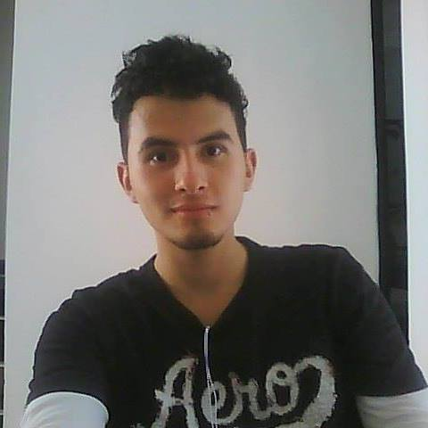

Sergio Andrés Ruiz Vélez
Hola! Como ves, me llamo Sergio, pero puedes decirme Shecho. Aprovechemos este espacio para que sepas un poco mas de mí.
Hola! Como ves, me llamo Sergio, pero puedes decirme Shecho. Aprovechemos este espacio para que sepas un poco mas de mí.
Nací en la ciudad de Villavicencio, capital del departamento del Meta. A mis 4 años, nos ubicamos en busca de mejores oportunidades en la ciudad de Ibagué, conocida como la ciudad musical de Colombia. Estuvimos en esta ciudad cerca de unos 7 años donde pude cursar la primaria para luego saltar a una ciudad más pequeña, llamada Melgar. En esta ciudad, estuvimos cerca de 6 años lo que facilito que realizara mis estudios secundarios allá. Luego, apareció un nuevo destino llamado Fusagasugá en donde estuve cerca de 7 años y aquí, fue donde asistí a la universidad.
Han sido bastantes cambios de ciudad, ¿no lo crees?
Luego de terminar la Universidad, me arriesgue a vivir solo en la ciudad capital: Bogotá. Aquí, estuve durante un periodo de 4 años cuando nuevamente decidí que era el momento de otro cambio. Mi nuevo destino: Medellín. Siendo así, llevo en esta ciudad cerca de 5 meses y vamos a ver cuánto tiempo me amaño acá jajajaja
Le cogí cariño a la cocina luego de vivir mucho tiempo solo y además, cuando estaba en la Universidad trabajé para un restaurante. Eso implica que conozco uno que otro truco para ofrecer a alguien cuando cocine.
¿Parece cliché, no?, pero soy aficionado a un juego en particular: World of Warcraft!!!! Mi personaje main es un Druida, pero debo admitir qué sin un computador bueno, juego solo como para pasar el rato.
Consumo vídeos de todo tipo: Comedia, temas paranormales (Me encanta) y educativo. Ando suscrito como mil canales donde puedo consultar en cualquier momento algo que me genere dudas y sé que encontraré la respuesta allí.